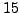
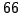

In this presentation an optimization-based multigrid algorithm is applied to an elliptic model problem and steady as well as unsteady aerodynamic shape designs showing the potential for large improvement in the overall computational cost for high fidelity optimizations which typically involve many design and state variables. Nash and Lewis [1] proposed a multigrid optimization framework for solving optimization problems which they called MG/OPT. MG/OPT recursively uses coarse resolution optimization problems to generate search directions for finer-resolution optimization problems. Since the sub-problems on the different levels are of similar structure one can use the same algorithms and software modules to solve them. The good performance of MG/OPT for model problems [1] encouraged us to apply this algorithm to CFD inspired optimization problems.
The elliptic model problem is the Dirichlet-to-Neumann map for the
Laplacian on a square [2].
We use BFGS as optimizer on all multigrid levels except for the coarsest
level where we use a full Newton optimizer.
Results for our FMG/OPT algorithm are shown in the Table. The term
``tnfg'' refers to total number of function and gradient
evaluations and ``tnh'' means total number of Hessian evaluations.  is
the number of design variables as well as grid points in one dimension.
One can clearly see that FMG/OPT is superior to the use of BFGS alone,
since it shifts much of the computational effort to coarser grids.
is
the number of design variables as well as grid points in one dimension.
One can clearly see that FMG/OPT is superior to the use of BFGS alone,
since it shifts much of the computational effort to coarser grids.
| Pure BFGS | iter | ||||||
| tnfg | |||||||
| FMG/OPT | cycles | - | - | - | - | - | |
| (start at M=513) | tnfg | - | - | - | |||
| tnh | 0 | 0 |  | - | - | - | |
| FMG/OPT | cycles | - | - | - | - | - | |
| (start at M=257) | tnfg | - | - | - | |||
| tnh | - | 0 | 0 | - | - | ||
| FMG/OPT | cycles | - | - | - | - | - | |
| (start at M=129) | tnfg | - | - |  | - | ||
| tnh | - | - | 0 | 0 | - | ||
| FMG/OPT | cycles | - | - | - | - | - | |
| (start at M=65) | tnfg | - | - | - | |||
| tnh | - | - | - | 0 | 0 |
We also consider the steady inviscid flow around a NACA 0012 airfoil, as well as the unsteady case of a sinusoidally pitching airfoil about its quarter-chord location as flow examples which are described in more detail in Mani and Mavriplis [3]. The finest mesh has about triangular elements and the flow solver is second order in both time and space. The required coarser meshes are built by repeated agglomeration or merging of neighboring control volumes. Two coarser levels are used with and elements, respectively. The deformation and movement of the mesh is performed via a linear tension spring analogy on the finest level. The free-stream Mach number is with an angle of attack of degrees in the steady case and a mean angle of attack of degrees for the pitching airfoil. The optimization examples consists of inverse designs given by the following objective function:
 |
(1) |
We use design variables, half of which are placed at upper and
the other half at lower surface points which control the magnitude of
Hicks-Henne sine bump functions.
At the time of this writing we do not have any unsteady results yet.
However, when FMG/OPT is applied to the steady problem, it shows
substantial improvement over the use of steepest-descent (SD).
Using SD as a single level optimizer requires more than function
and gradient evaluations (``tnfg'') to reduce  by three orders of
magnitude. Using it as smoother/optimizer in FMG/OPT
only requires
by three orders of
magnitude. Using it as smoother/optimizer in FMG/OPT
only requires  ``tnfg'' on the finest level.
In addition, FMG/OPT takes about three times ``tnfg'' on the medium level
and about twenty times ``tnfg''
on the coarsest level. Since the computational costs are approximately
a factor of four and sixteen cheaper, respectively, this adds ``only''
about per cent to the overall computational cost.
We expect even higher savings in the unsteady case since we can also
coarsen the ``grid'' in the time domain. Multigrid optimization for time
dependent problems
should be directly applicable to the acceleration of data assimilation
problems (i.e. 4DVAR) in future work.
``tnfg'' on the finest level.
In addition, FMG/OPT takes about three times ``tnfg'' on the medium level
and about twenty times ``tnfg''
on the coarsest level. Since the computational costs are approximately
a factor of four and sixteen cheaper, respectively, this adds ``only''
about per cent to the overall computational cost.
We expect even higher savings in the unsteady case since we can also
coarsen the ``grid'' in the time domain. Multigrid optimization for time
dependent problems
should be directly applicable to the acceleration of data assimilation
problems (i.e. 4DVAR) in future work.